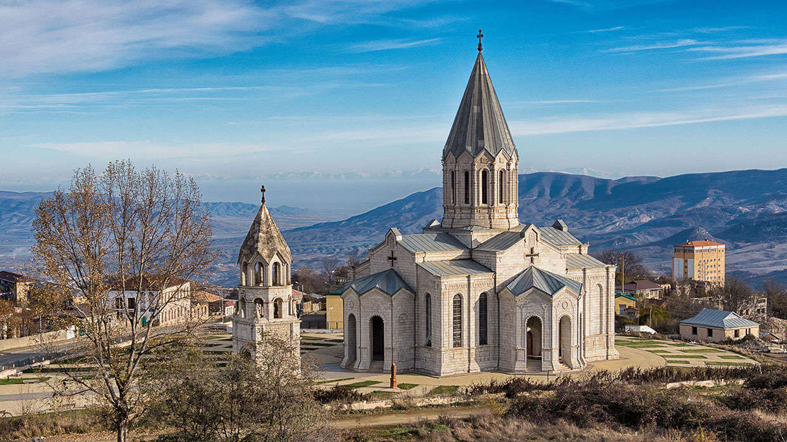

Դադիվանքկամ Խութավանք, հայկական առաքելական միջնադարեան վանական համալիր՝ Արցախի Հանրապետութեան Շահումեան շրջանի Դադիվանք գիւղին մէջ՝ Դադիվան լերան լանջին՝ Թարթառ գետի ձախ ափին։ Պատմականօրէն եղած է Մեծ Կվենք գաւառին հոգեւոր առաջնորդարանը։ Կոչուած է նաեւ Խութաւանք, որովհետեւ կառուցուած է խութի (բլրակի) վրայ։Տեսնել ավելին
Սուրբ Ամենափրկիչ Ղազանչեցոց եկեղեցի հայկական առաքելական եկեղեցի Արցախի Հանրապետության Շուշիի շրջանի Շուշի քաղաքում։ Հայ առաքելական եկեղեցու Արցախի թեմի կենտրոնն է։ Գտնվում է Ադրբեջանի վերահսկողության տակ։ Ընդգրկված է Շուշիի քաղաքի պատմության և մշակույթի անշարժ հուշարձանների ցանկում և հանդիսանում է Արցախի խորհրդանիշներից մեկը։ Կառուցվել է 1868-1887 թվականներին։ Տեսնել ավելին
Ամարասի վանքհայկական առաքելական վանքային համալիր Արցախի Հանրապետության Մարտունու շրջանի Մաճկալաշեն գյուղի մոտ, Խազազ և Լուսավորիչ սարերի միջև ընկած գոգահովտում։ Հնում մտել է Մեծ Հայքի Արցախ նահանգի Մյուս Հաբանդ գավառի մեջ Տեսնել ավելին